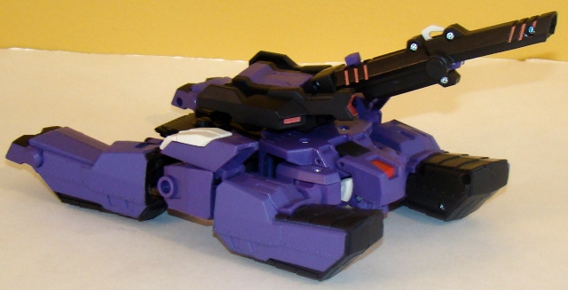

Shockwave
(True Colors) w/ Activators Bumblebee (Animated) [Target Exclusive]
Shockwave
(True Colors) w/ Activators Bumblebee (Animated) [Target Exclusive]
Set Price
: $25 U.S.
(NOTE: The Activators class
Bumblebee
pack-in is the exact same as the regular release.)
Shockwave
(True Colors)

Allegiance
: Decepticon
Size
: Voyager
Difficulty of Transformation
: Medium
(between vehicle & robot modes); Easy (between either robot mode or
either vehicle mode)
Color Scheme
: Black, matte purple,
and some white, transparent red, metallic red, pale metallic bronze, and
metallic silvery purple
Rating
: 8.2
(NOTE: Because this is a repaint, this is
not a full-blown review. This mainly covers any changes made to the mold
and the color scheme, and merely compares it to the original Animated Shockwave.
For a review on the mold itself, read the review of the original Animated
Shockwave
here
.)
Now that his cover "has
been blown" in the TV show, Shockwave has reverted to his "true colors"--
i.e., his G1 colors. The main color change has been replacing the rather
drab gray of the original release with a more visually interesting purple,
which also goes well with Shockwave's other main color of black, which
is pretty much on the same pieces and in the same amounts on this exclusive
as on the original release. The red used as an accent color is also the
same as it was on the original release-- if it wasn't for the real prevalence
of purple on the figure, this would've almost seemed like a "halfway" repaint
because of this, but given that his original G1 form had a fair amount
of black on it as well, one can hardly blame the redeco artists for keeping
it. There is another, more minor, "less G1-y" color change, though-- the
teal color accents have been replaced with a metallic silver purple. They
look quite good, but are a little too similar to the actual purple for
me-- keeping it teal or changing it to another accent color-- like perhaps
orange-- would have worked better, methinks. Other minor changes are that
"Longarm Prime's" optics are now a dull bronze, and the faction symbols
are now their traditional purple and red (and non-chrome), with the chest
piece surrounding them being painted a nice white, which contrasts really
well with the purple. As far as how much it fits the toy, it fits Shockwave
VERY well-- however, when he's in Longarm Prime mode, he looks less than
convincing. Of course, that's partially the point-- his cover's been blown
by the time he assumes this color scheme in the show, so why hide anymore?--
but still, it being the toy's central gimmick it is worth pointing out.
Purple also doesn't work quite as well for the vehicle modes.
No mold changes have
been made to "True Colors" Shockwave.
"True Colors" Shockwave
is an easy recommendation if you really like purple and just HAVE to have
a purple Shockwave, no matter the incarnation. It also looks more visually
interesting, in my opinion, and he comes with an Activator that is one
of the better molds from the line and is roughly in scale with him, to
boot! However, as far as "suiting" the character, the original paint job
works better in both vehicle modes and in "Longarm Prime" mode, even though
it's kinda boring. So, if you prefer looks over practicality, get this
version. If it's the other way around, get the original version.
Shockwave w/ Bumblebee Character Bio
:
DECEPTICON DEEP COVER SPY
Because of his job operating deep undercover
in the Autobot ranks, Shockwave very rarely lets his emotions get the better
of him. There's something about Bumblebee, though, that just bugs him.
The hyperactive young Autobot annoys him enough that he lets his cover
slip, converts into his Decepticon combat mode, and attacks!
GALACTIC POWERS AND ABILITIES:
- Expert code breaker and thief
- Enjoys blackmailing Autobots in positions
of power
- Stole his Autobot identity from old
historical files
Review by Beastbot
Back to Transformers
Animated Index